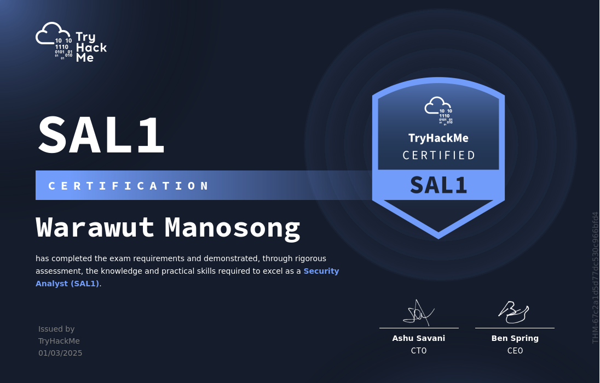

<!DOCTYPE html>
<html lang="en">
<head>
    <meta charset="UTF-8">
    <meta name="viewport" content="width=device-width, initial-scale=1.0">
    <title>How I Passed TryHackMe SAL1 on My Second Attempt | Chicken0248</title>
    <meta name="description" content="A detailed review of the TryHackMe Security Analyst Level 1 (SAL1) certification — covering pricing, honest thoughts on THM's marketing, the exam format with SOC simulation, my failed first attempt, lessons learned, and tips to pass." />
    <meta property="og:type" content="article" />
    <meta property="og:site_name" content="Chicken0248" />
    <meta property="og:url" content="https://chickenloner.github.io/reviews/sal1/" />
    <meta property="og:title" content="How I Passed TryHackMe SAL1 on My Second Attempt" />
    <meta property="og:description" content="A detailed review of the TryHackMe Security Analyst Level 1 (SAL1) certification — covering pricing, honest thoughts on THM's marketing, the exam format with SOC simulation, my failed first attempt, lessons learned, and tips to pass." />
    <meta property="og:image" content="https://chickenloner.github.io/reviews/sal1/cover.png" />
    <meta name="twitter:card" content="summary_large_image" />
    <meta name="twitter:site" content="@Chicken_0248" />
    <meta name="twitter:title" content="How I Passed TryHackMe SAL1 on My Second Attempt" />
    <meta name="twitter:description" content="A detailed review of the TryHackMe Security Analyst Level 1 (SAL1) certification — covering pricing, honest thoughts on THM's marketing, the exam format with SOC simulation, my failed first attempt, lessons learned, and tips to pass." />
    <meta name="twitter:image" content="https://chickenloner.github.io/reviews/sal1/cover.png" />
    <link rel="icon" href="/chicken0248.png" type="image/png">
    <script src="https://cdn.tailwindcss.com"></script>
    <script crossorigin src="https://unpkg.com/react@18/umd/react.production.min.js"></script>
    <script crossorigin src="https://unpkg.com/react-dom@18/umd/react-dom.production.min.js"></script>
    <script src="https://unpkg.com/@babel/standalone/babel.min.js"></script>
    <script src="https://unpkg.com/lucide@latest"></script>
    <style>
        @keyframes fadeIn {
            from { opacity: 0; transform: translateY(20px); }
            to   { opacity: 1; transform: translateY(0); }
        }
        .animate-fadeIn { animation: fadeIn 0.5s ease-out; }

        /* ── DARK MODE ── */
        .dark.min-h-screen { background: linear-gradient(135deg, #0f172a 0%, #141f35 50%, #0a1628 100%) !important; }
        .dark nav { background-color: rgba(15,23,42,0.96) !important; border-bottom-color: rgba(51,65,85,0.5) !important; }
        .dark .bg-white    { background-color: #1e293b !important; }
        .dark .bg-gray-50  { background-color: #0f172a !important; }
        .dark .bg-gray-100 { background-color: #334155 !important; }
        .dark .bg-amber-50   { background-color: rgba(245,158,11,0.10) !important; }
        .dark .bg-amber-100  { background-color: rgba(245,158,11,0.20) !important; }
        .dark .bg-blue-50    { background-color: rgba(37,99,235,0.12) !important; }
        .dark .bg-blue-100   { background-color: rgba(37,99,235,0.20) !important; }
        .dark .bg-red-50     { background-color: rgba(220,38,38,0.10) !important; }
        .dark .bg-green-50   { background-color: rgba(22,163,74,0.10) !important; }
        .dark .bg-green-100  { background-color: rgba(22,163,74,0.20) !important; }
        .dark .text-gray-800 { color: #e2e8f0 !important; }
        .dark .text-gray-700 { color: #cbd5e1 !important; }
        .dark .text-gray-600 { color: #94a3b8 !important; }
        .dark .text-gray-500 { color: #64748b !important; }
        .dark .text-gray-400 { color: #475569 !important; }
        .dark .text-amber-700  { color: #fbbf24 !important; }
        .dark .text-blue-600   { color: #60a5fa !important; }
        .dark .text-green-700  { color: #4ade80 !important; }
        .dark .text-red-700    { color: #f87171 !important; }
        .dark .border-gray-100 { border-color: #334155 !important; }
        .dark .border-gray-200 { border-color: #475569 !important; }
        .dark .border-amber-200  { border-color: rgba(245,158,11,0.3) !important; }
        .dark .border-blue-200   { border-color: rgba(37,99,235,0.3) !important; }
        .dark .border-red-200    { border-color: rgba(220,38,38,0.3) !important; }
        .dark .border-green-200  { border-color: rgba(22,163,74,0.3) !important; }
        .dark .hover\:bg-gray-50:hover { background-color: #1e293b !important; }
        .dark .hover\:text-blue-600:hover { color: #60a5fa !important; }
        .dark ::-webkit-scrollbar       { width: 6px; }
        .dark ::-webkit-scrollbar-track { background: #0f172a; }
        .dark ::-webkit-scrollbar-thumb { background: #334155; border-radius: 3px; }
    </style>
</head>
<body>
    <div id="root"></div>

    <script type="text/babel">
        const { useState, useEffect, useRef } = React;

        const Icon = ({ name, className = "w-6 h-6", ...props }) => {
            const ref = useRef(null);
            useEffect(() => {
                if (ref.current) {
                    const el = lucide.createElement(lucide[name], { class: className });
                    ref.current.innerHTML = '';
                    ref.current.appendChild(el);
                }
            }, [name, className]);
            return <i ref={ref} className={`flex-shrink-0 ${className}`} {...props}></i>;
        };

        /* ── Reusable Components ── */

        const Section = ({ id, title, icon, children }) => (
            <section id={id} className="scroll-mt-24">
                <h2 className="text-2xl font-bold text-gray-800 mb-5 flex items-center gap-3 border-b border-gray-200 pb-3">
                    <Icon name={icon} className="w-6 h-6 text-amber-600" />
                    {title}
                </h2>
                <div className="space-y-4">{children}</div>
            </section>
        );

        let figCount = 0;
        const resetFigCount = () => { figCount = 0; };

        const Fig = ({ src, alt }) => {
            figCount += 1;
            const n = figCount;
            return (
                <figure className="my-5">
                    
                    <figcaption className="text-center text-xs text-gray-400 mt-1.5 font-mono">Figure {n}</figcaption>
                </figure>
            );
        };

        const Callout = ({ color = "amber", children }) => {
            const styles = {
                amber: "bg-amber-50 border-amber-400 text-gray-700",
                blue:  "bg-blue-50  border-blue-400  text-gray-700",
                red:   "bg-red-50   border-red-400   text-gray-700",
                green: "bg-green-50 border-green-400 text-gray-700",
            };
            return (
                <blockquote className={`border-l-4 rounded-r-xl px-5 py-4 my-4 italic text-sm leading-relaxed ${styles[color]}`}>
                    {children}
                </blockquote>
            );
        };

        const TipList = ({ items }) => (
            <ul className="list-disc list-outside ml-5 space-y-2 text-gray-700">
                {items.map((item, i) => <li key={i}>{item}</li>)}
            </ul>
        );

        const B = ({ children }) => <strong className="text-gray-800">{children}</strong>;
        const A = ({ href, children }) => (
            <a href={href} target="_blank" rel="noopener noreferrer"
               className="text-blue-600 hover:underline">{children}</a>
        );

        const renderStars = (rating) => {
            const full = Math.floor(rating);
            const half = rating - full >= 0.5;
            return '★'.repeat(full) + (half ? '½' : '') + '☆'.repeat(5 - full - (half ? 1 : 0));
        };

        /* ── Score Card ── */
        const ScoreCard = ({ section, total, parts }) => (
            <div className="bg-white rounded-xl border border-gray-200 overflow-hidden shadow-sm">
                <div className="bg-amber-50 border-b border-amber-200 px-4 py-2 flex items-center justify-between">
                    <span className="font-bold text-gray-800 text-sm">{section}</span>
                    <span className="font-bold text-amber-700 text-sm">{total} pts total</span>
                </div>
                <div className="divide-y divide-gray-100">
                    {parts.map(([label, pts], i) => (
                        <div key={i} className="flex justify-between items-center px-4 py-2 text-sm">
                            <span className="text-gray-700">{label}</span>
                            <span className="font-semibold text-gray-800">{pts} pts</span>
                        </div>
                    ))}
                </div>
            </div>
        );

        /* ── App ── */

        const App = () => {
            const [dark, setDark] = useState(() => localStorage.getItem('darkMode') === 'true');
            const [meta, setMeta] = useState(null);
            useEffect(() => { localStorage.setItem('darkMode', dark); }, [dark]);

            useEffect(() => {
                fetch('/data/reviews.json')
                    .then(r => r.json())
                    .then(data => {
                        const entry = data.find(r => r.url === '/reviews/sal1/index.html');
                        if (entry) setMeta(entry);
                    })
                    .catch(() => {});
            }, []);

            resetFigCount();

            const tocItems = [
                { id: 'introduction',    label: 'Introduction & Pricing',               icon: 'BookOpen'      },
                { id: 'marketing',       label: 'How TryHackMe Markets SAL1',           icon: 'Megaphone'     },
                { id: 'exam-info',       label: 'Exam Information',                     icon: 'FileText'      },
                { id: 'exam-experience', label: 'Exam Experience & Lessons Learned',    icon: 'ClipboardList' },
                { id: 'feedback',        label: 'Exam Feedback',                        icon: 'MessageSquare' },
                { id: 'tips',            label: 'Exam Tips & Key Takeaways',            icon: 'Lightbulb'     },
            ];

            return (
                <div className={`min-h-screen bg-gradient-to-br from-slate-50 via-amber-50 to-blue-50 ${dark ? 'dark' : ''}`}>

                    {/* Navigation */}
                    <nav className="sticky top-0 z-50 bg-white/80 backdrop-blur-md border-b border-gray-200 px-4 py-3">
                        <div className="max-w-4xl mx-auto flex items-center justify-between">
                            <div className="flex items-center gap-2 text-sm flex-wrap">
                                <a href="/" className="flex items-center gap-2 hover:opacity-80 transition-opacity">
                                    
                                    <span className="font-bold text-gray-800 hidden sm:inline">Chicken0248</span>
                                </a>
                                <span className="text-gray-400">/</span>
                                <a href="/reviews/index.html" className="font-medium text-gray-600 hover:text-blue-600 transition-colors">Reviews</a>
                                <span className="text-gray-400">/</span>
                                <span className="font-semibold text-gray-700">SAL1</span>
                            </div>
                            <button onClick={() => setDark(!dark)}
                                className="p-2 rounded-lg hover:bg-gray-100 text-gray-600 transition-colors text-lg">
                                {dark ? '\u2600\uFE0F' : '\uD83C\uDF19'}
                            </button>
                        </div>
                    </nav>

                    <main className="max-w-4xl mx-auto px-4 py-8 space-y-10 animate-fadeIn">

                        {/* Hero */}
                        <div className="relative overflow-hidden rounded-3xl shadow-2xl">
                            
                            <div className="absolute inset-0 bg-gradient-to-t from-black/80 via-black/30 to-transparent" />
                            <div className="absolute bottom-0 left-0 right-0 p-6 md:p-8 text-white">
                                <h1 className="text-2xl md:text-3xl font-extrabold tracking-tight mb-3 leading-snug">
                                    How I Passed TryHackMe — Security Analyst Level 1 (SAL1) on My Second Attempt!
                                </h1>
                                <div className="flex flex-wrap gap-2 text-sm">
                                    <span className="bg-white/20 backdrop-blur-sm px-3 py-1 rounded-full flex items-center gap-1.5">
                                        <Icon name="Building2" className="w-3.5 h-3.5" /> TryHackMe
                                    </span>
                                    <span className="bg-white/20 backdrop-blur-sm px-3 py-1 rounded-full flex items-center gap-1.5">
                                        <Icon name="Calendar" className="w-3.5 h-3.5" /> March 2025
                                    </span>
                                    <span className="bg-blue-500/80 backdrop-blur-sm px-3 py-1 rounded-full flex items-center gap-1.5">
                                        <Icon name="Shield" className="w-3.5 h-3.5" /> Blue Team · Entry Level
                                    </span>
                                    <span className="bg-green-500/80 backdrop-blur-sm px-3 py-1 rounded-full flex items-center gap-1.5">
                                        <Icon name="CheckCircle" className="w-3.5 h-3.5" /> Passed (2nd attempt)
                                    </span>
                                </div>
                            </div>
                        </div>

                        {/* Metadata */}
                        <div className="bg-white rounded-2xl border border-gray-200 p-5 shadow-sm">
                            <div className="grid grid-cols-2 md:grid-cols-4 gap-4 text-sm">
                                <div><span className="text-gray-500 block">Certification</span><span className="font-semibold text-gray-800">SAL1</span></div>
                                <div><span className="text-gray-500 block">Provider</span><span className="font-semibold text-gray-800">TryHackMe</span></div>
                                <div><span className="text-gray-500 block">Difficulty</span><span className="font-semibold text-amber-600">{meta?.difficulty ?? '—'}</span></div>
                                <div><span className="text-gray-500 block">Rating</span>
                                    {meta?.rating ? (
                                        <span className="font-semibold text-gray-800 flex items-center gap-1">
                                            <span className="text-yellow-500">{renderStars(meta.rating)}</span>
                                            <span className="text-gray-500 font-normal text-xs ml-0.5">{meta.rating.toFixed(1)}/5.0</span>
                                        </span>
                                    ) : <span className="text-gray-400">—</span>}
                                </div>
                            </div>
                        </div>

                        {/* Table of Contents */}
                        <div className="bg-white rounded-2xl border border-gray-200 p-6 shadow-sm">
                            <h2 className="text-lg font-bold text-gray-800 mb-4 flex items-center gap-2">
                                <Icon name="List" className="w-5 h-5 text-amber-600" />
                                Table of Contents
                            </h2>
                            <div className="grid sm:grid-cols-2 gap-1">
                                {tocItems.map((item, i) => (
                                    <a key={item.id} href={`#${item.id}`}
                                       className="flex items-center gap-2 px-3 py-2 rounded-lg text-gray-700 hover:bg-gray-50 hover:text-blue-600 transition-colors text-sm">
                                        <Icon name={item.icon} className="w-4 h-4 text-gray-400" />
                                        <span className="text-gray-400 font-mono text-xs w-5">{i + 1}.</span>
                                        <span className="font-medium">{item.label}</span>
                                    </a>
                                ))}
                            </div>
                        </div>

                        {/* ═══════════ INTRODUCTION ═══════════ */}
                        <Section id="introduction" title="Introduction & Pricing" icon="BookOpen">
                            <Fig src="cover.png" alt="TryHackMe Security Analyst Level 1 (SAL1) certification" />

                            <p className="text-gray-700 leading-relaxed">
                                TryHackMe launched their first professional certification on <B>25 February 2025</B> — a blue team certification named <B>Security Analyst Level 1 (SAL1)</B>. The naming convention is deliberately similar to BTL1, and both target entry-level security jobs. TryHackMe states in their FAQ that no prior education, certification, or work experience is required, which makes it one of the most accessible certifications in the space. The most interesting aspects, however, are how they marketed it and the exam format itself — but before that, let's cover pricing.
                            </p>

                            <Fig src="image-2.png" alt="TryHackMe SAL1 pricing options" />

                            <p className="text-gray-700 leading-relaxed">
                                There are <B>two pricing models</B>:
                            </p>
                            <ul className="list-disc list-outside ml-5 space-y-1.5 text-gray-700">
                                <li><B>Non-premium users</B>: £299 — includes 2 exam attempts plus 3 months of THM Premium.</li>
                                <li><B>Active premium subscribers</B>: £255 — exam only (2 attempts).</li>
                            </ul>
                            <p className="text-gray-700 leading-relaxed">
                                Theoretically, you could buy 1 month of premium at £12 first to qualify for the £255 price, saving £32 total — though I'm not sure if that model actually works in practice.
                            </p>
                        </Section>

                        {/* ═══════════ MARKETING ═══════════ */}
                        <Section id="marketing" title="How TryHackMe Markets SAL1" icon="Megaphone">
                            <Fig src="image-3.png" alt="TryHackMe SAL1 marketing — 'The defensive certification that gets you hired'" />

                            <p className="text-gray-700 leading-relaxed">
                                I am not a fan of how this certification is marketed. TryHackMe branded SAL1 as <B>"The defensive certification that gets you hired"</B> — a claim that implies every certified holder will land a job, which is simply not true. A certification can prepare you with the skills; it cannot guarantee employment. Unless a firm explicitly commits to hiring SAL1-certified candidates, "get you hired" is aspirational at best and misleading at worst. The more accurate framing would be "skill-ready" — not "job opportunity."
                            </p>

                            <Fig src="image-4.png" alt="TryHackMe SAL1 comparison table against BTL1, CDSA, and CySA+" />

                            <p className="text-gray-700 leading-relaxed">
                                TryHackMe also published a comparison table against three other blue team certifications — BTL1, CDSA, and CySA+ — which generated significant backlash from the community. Let's break down why:
                            </p>
                            <ul className="list-disc list-outside ml-5 space-y-2 text-gray-700">
                                <li>
                                    <B>Job-ready SOC experience</B>: TryHackMe is genuinely the only platform (at the time of writing, March 2025) that integrates a real SOC simulation into the exam with live alert triage. This criterion is legitimately theirs to claim.
                                </li>
                                <li>
                                    <B>Brand trusted by millions</B>: Note the word <em>"Brand"</em> — they're comparing the platform's brand recognition, not the certification's recognition. These are very different things.
                                </li>
                                <li>
                                    <B>Entry level</B>: This is the most debatable column. CySA+ officially recommends a minimum of 4 years of hands-on experience, while the other certifications on the table — including SAL1 — have no stated prerequisites. It's a fair point, but framing it as a head-to-head win is a stretch.
                                </li>
                            </ul>
                            <p className="text-gray-700 leading-relaxed">
                                Certifications earn recognition through time and trust. Even if Fortune 500 companies trust TryHackMe's platform, whether they trust the SAL1 certification specifically is a different matter — and only time will tell. You can verify this yourself by searching "SAL1" or "Security Analyst Level 1" on LinkedIn.
                            </p>

                            <Fig src="image-5.png" alt="TryHackMe community engagement quote" />

                            <p className="text-gray-700 leading-relaxed">
                                There is also no "breakthrough" into cybersecurity — you're already in if you're willing to engage. If you encounter gatekeeping in one community, find another. There are plenty of cybersecurity communities that will genuinely help you.
                            </p>
                            <p className="text-gray-700 leading-relaxed">
                                With that said, let's talk about the exam itself.
                            </p>
                        </Section>

                        {/* ═══════════ EXAM INFORMATION ═══════════ */}
                        <Section id="exam-info" title="Exam Information" icon="FileText">
                            <Fig src="image-6.png" alt="SAL1 exam process — 5 stages" />

                            <p className="text-gray-700 leading-relaxed">
                                The exam consists of <B>5 stages</B>: identity verification, then <B>80 Multiple Choice Questions (MCQ)</B>, followed by <B>SOC Simulation 1</B> and <B>SOC Simulation 2</B> in sequence, and finally your result. There is no final report to write — but you do write a <B>case report for each ticket</B> as you close alerts inside the simulation.
                            </p>

                            <Fig src="image-7.png" alt="SAL1 case report requirement per ticket" />
                            <Fig src="image-8.png" alt="SAL1 exam duration and passing score" />

                            <p className="text-gray-700 leading-relaxed">
                                The exam runs for <B>24 hours</B> and requires a minimum of <B>750 / 1000</B> to pass. Here's the score breakdown:
                            </p>

                            <Fig src="image-9.png" alt="SAL1 score breakdown per section" />

                            <div className="grid md:grid-cols-2 gap-4">
                                <ScoreCard
                                    section="Section 1 — MCQ"
                                    total="200"
                                    parts={[['80 questions, 1 hour time limit', '200']]}
                                />
                                <ScoreCard
                                    section="Section 2 & 3 — SOC Simulation (each)"
                                    total="400"
                                    parts={[
                                        ['Incident Classification (TP/FP)', '150'],
                                        ['Escalation decisions', '150'],
                                        ['Case report (AI-graded)', '100'],
                                    ]}
                                />
                            </div>

                            <p className="text-gray-700 leading-relaxed">
                                Sections must be completed in order — you must finish the MCQ before starting Simulation 1, and Simulation 1 before Simulation 2. Each simulation generates alerts over time in a real SOC environment.
                            </p>

                            <Fig src="image-10.png" alt="SAL1 SOC simulator — a B2B feature" />
                            <Fig src="image-11.png" alt="SAL1 SOC simulator interface with Splunk" />

                            <p className="text-gray-700 leading-relaxed">
                                The SOC simulator generates alerts gradually — you'll use a <B>Splunk SIEM</B> to investigate each one and decide: True Positive (TP) or False Positive (FP)? If it's a TP, does it need to be escalated? Note that this is the same SOC simulator feature TryHackMe sells to business subscribers — free and premium users can only practice on the "Phishing Unfolding" free simulation.
                            </p>

                            <Fig src="image-12.png" alt="TryDetectThis — custom THM threat intel platform" />

                            <p className="text-gray-700 leading-relaxed">
                                You also have access to <B>TryDetectThis</B> — TryHackMe's custom threat intelligence platform — on the analyst VM for reputation checks (file, hash, IP, domain). Do not expect VirusTotal results here; TryDetectThis is a custom tool specific to the exam environment.
                            </p>

                            <Fig src="image-13.png" alt="TryHackMe recommended learning path for SAL1" />

                            <p className="text-gray-700 leading-relaxed">
                                TryHackMe provides a recommended learning path, practice rooms, and a free SOC simulator. My personal recommendation: <B>do all the Splunk modules and challenges</B> until you feel comfortable pivoting between different data sources and IOC types.
                            </p>

                            <Fig src="image-14.png" alt="SAL1 certification validity — 3 years" />
                            <Fig src="image-15.png" alt="TryHackMe certification renewal page" />

                            <p className="text-gray-700 leading-relaxed">
                                SAL1 comes with a <B>3-year validity period</B>, similar to CompTIA and EC-Council certifications, and to newer OffSec certifications like OSCP+. However, since SAL1 is TryHackMe's first certification, the renewal process isn't clearly defined yet — keep an eye on how they handle this and what renewal fees, if any, will look like.
                            </p>
                        </Section>

                        {/* ═══════════ EXAM EXPERIENCE ═══════════ */}
                        <Section id="exam-experience" title="Exam Experience & Lessons Learned" icon="ClipboardList">
                            <h3 className="text-lg font-bold text-gray-800 mb-3">Attempt 1 — Failed</h3>

                            <Fig src="image-16.png" alt="Starting the first SAL1 attempt on launch day" />

                            <p className="text-gray-700 leading-relaxed">
                                I started my first attempt on <B>launch day</B> — 25 February 2025 — confident I'd pass. I had never used TryHackMe's SOC simulator before, so I tried it briefly to get a feel for the interface.
                            </p>

                            <Fig src="image-17.png" alt="Free SOC simulator practice session" />

                            <p className="text-gray-700 leading-relaxed">
                                After identifying all the True Positives, the practice simulation ended and a results screen appeared. Without reading the feedback for each ticket — which I absolutely should have done — I jumped straight into the exam.
                            </p>

                            <Fig src="image-18.png" alt="ID verification via Onfido at exam start" />

                            <p className="text-gray-700 leading-relaxed">
                                Clicking "Start Exam" triggers <B>ID verification via Onfido</B> — you'll need a webcam for face recognition and a physical ID. After that, you agree to the exam terms, watch a briefing video, and Section 1 begins.
                            </p>
                            <p className="text-gray-700 leading-relaxed">
                                The 80 MCQs weren't too hard for anyone who studied the recommended path. They cover fundamentals: security concepts, networking, NIST IR process, Cyber Kill Chain, and SOC methodology. I finished Section 1 and went directly into Sections 2 and 3 without any break — which was a mistake.
                            </p>
                            <p className="text-gray-700 leading-relaxed">
                                Unlike the free "Phishing Unfolding" simulation where you close all TP alerts within 30 minutes, the exam simulation generates alerts <em>over time</em>. You wait for alerts to appear — it genuinely simulates a real SOC shift. The total number of tickets is shown once Section 1 is complete, but you only need to <B>close all TP alerts</B> to finish each simulation.
                            </p>
                            <p className="text-gray-700 leading-relaxed">
                                After 3 hours and 20 minutes, I finished all three sections. Section 3 was shorter but more challenging than Section 2.
                            </p>

                            <Fig src="image-19.png" alt="SAL1 first attempt result — Failed" />

                            <Callout color="red">
                                I failed. My SOC simulation scores on both sections were below the passing threshold — and I deserved it.
                            </Callout>

                            <Fig src="image-20.png" alt="Score breakdown showing AI-graded case report scores" />

                            <p className="text-gray-700 leading-relaxed">
                                Breaking it down: each SOC simulation is worth 400 points — 150 for incident classification, 150 for escalation decisions, and 100 for the case report (AI-graded in real time as you close each alert). Reading the AI feedback afterward, I clearly failed to cover <B>5Ws+H</B> (What, Where, When, Why, Who, and How) thoroughly enough, and I hadn't read the documentation carefully — which meant I missed important context about the environment, TP/FP criteria, and escalation requirements.
                            </p>

                            <h3 className="text-lg font-bold text-gray-800 mt-8 mb-3">Between Attempts — Preparation</h3>

                            <Fig src="image-21.png" alt="SAL1 3-day cooling period before retake" />

                            <p className="text-gray-700 leading-relaxed">
                                SAL1 has a <B>3-day cooling period</B> before you can use your retake. The exam package includes <B>1 retake</B>, so I planned to sit it again the following Saturday once I was fully rested and prepared.
                            </p>

                            <Fig src="image-22.png" alt="Practicing with SOC simulator between attempts" />

                            <p className="text-gray-700 leading-relaxed">
                                I practiced more with the SOC simulator and studied how the AI grades case reports. I noticed that <B>AI feedback is only provided for True Positive alerts</B> — FPs don't generate report scores.
                            </p>

                            <Fig src="image-23.png" alt="Reviewing the case report from the first failed attempt" />

                            <p className="text-gray-700 leading-relaxed">
                                I went back and read the case reports I'd written during the first attempt. I had been overconfident and lazy — I overlooked the AI's feedback entirely during the exam, which might have helped me course-correct and pass on the first try.
                            </p>

                            <h3 className="text-lg font-bold text-gray-800 mt-8 mb-3">Attempt 2 — Passed</h3>

                            <p className="text-gray-700 leading-relaxed">
                                On Saturday, after breakfast (or lunch?), I retook the exam. The MCQs felt harder this time — if Attempt 1 was slightly easier than CySA+, Attempt 2 was harder. After finishing Section 1, I started Section 2 immediately. I got the same SOC simulation as before, which let me go deeper than my first attempt — and I noticed a crucial detail I had missed entirely the first time around.
                            </p>
                            <p className="text-gray-700 leading-relaxed">
                                For the case reports this time, I wrote <B>very thorough reports</B> covering everything I found. It took <B>1 hour and 40 minutes</B> to close all TP alerts in Section 2. The mental exhaustion was real, so I took a <B>6-hour break</B> before tackling Section 3. Section 3 was a different simulation — also 1 hour and 40 minutes.
                            </p>

                            <Fig src="image-24.png" alt="SAL1 second attempt result — Passed with 959/1000" />

                            <Callout color="green">
                                I passed with <strong>959 / 1000</strong> — full marks on both classification and escalation, and case report scores above 80 on both simulations.
                            </Callout>

                            <Fig src="image-25.png" alt="SAL1 certificate issued with expiration date" />

                            <p className="text-gray-700 leading-relaxed">
                                The certificate is issued immediately upon passing and includes the expiration date.
                            </p>
                        </Section>

                        {/* ═══════════ FEEDBACK ═══════════ */}
                        <Section id="feedback" title="Exam Feedback" icon="MessageSquare">
                            <p className="text-gray-700 leading-relaxed">
                                SAL1 <B>nailed the SOC simulation experience</B>. Replicating a real SOC environment in an exam — where alerts trickle in over time and you have to triage them with Splunk — is genuinely innovative and I haven't seen another certification do it this way.
                            </p>
                            <p className="text-gray-700 leading-relaxed">
                                That said, the <B>AI case-report grading</B> still needs work. The main issue is transparency: I wish you could see exactly which parts of your report scored well and which didn't — not just during the exam, but also in the free SOC simulator practice mode. This would help candidates understand what the AI actually values, improving the learning loop and building trust in the grading system.
                            </p>
                            <p className="text-gray-700 leading-relaxed">
                                From TryHackMe's perspective, AI grading makes perfect sense. It scales to handle any number of simultaneous exam sitters without needing human graders, and it delivers results immediately. The challenge is convincing the community that the grades are fair — and right now, many people (including several of my friends) are skeptical.
                            </p>
                            <p className="text-gray-700 leading-relaxed">
                                I'd also love to see <B>TryDetectThis integrated directly into the SOC alert panel</B> — so you can paste IPs, hashes, and domains without switching to a separate analyst VM tab. A small UX improvement that would reduce friction considerably.
                            </p>
                            <p className="text-gray-700 leading-relaxed">
                                Finally, I'll be honest: this exam is <B>not truly entry level</B>, at least not by the standards of my country. The depth of case report writing expected — covering full 5Ws+H and environment context — goes well beyond what a typical SOC L1 analyst is expected to produce. Maybe TryHackMe is deliberately setting a higher bar. If so, say so explicitly.
                            </p>
                        </Section>

                        {/* ═══════════ TIPS ═══════════ */}
                        <Section id="tips" title="Exam Tips &amp; Key Takeaways" icon="Lightbulb">
                            <div className="bg-amber-50 rounded-2xl border border-amber-200 p-6">
                                <TipList items={[
                                    <span><B>Read the documentation thoroughly</B> before triaging any alerts. Understand the criteria for TP vs. FP, and the escalation requirements for each alert type. Missing these will cost you heavily.</span>,
                                    <span>Read each alert's details and description carefully. Understand how it was triggered before you start your investigation.</span>,
                                    <span><B>Do not underestimate the MCQ section</B>. It's straightforward but covers a wide range — NIST IR process, Cyber Kill Chain, networking fundamentals, SOC workflows — and breadth is what catches people off guard.</span>,
                                    <span>Treat the case report as a <B>bonus multiplier</B>: if you nail classification and escalation, your report score tips you over the line. If you're borderline on classification, a strong report can save you.</span>,
                                    <span>Practice case report writing with <B>Phishing Unfolding</B> (the free SOC simulation). Study the AI feedback on each closed alert and iterate — understand what the AI rewards.</span>,
                                    <span><B>Cover 5Ws+H</B> in every case report: What happened, Where it occurred, When, Why it's significant, Who is involved, and How it was carried out. Go beyond what's visible on the ticket.</span>,
                                    <span><B>Skip FP alerts</B> — the simulation only completes when all TP alerts are closed. Spending time investigating a FP beyond ruling it out is wasted time.</span>,
                                    <span>This is a <B>24-hour exam</B>. Plan your schedule. You do not have to do everything in one sitting — and you shouldn't. Take real breaks. Mental exhaustion degrades both your triage accuracy and your report quality, which compounds against you.</span>,
                                    <span>If you don't have access to TryHackMe's full SOC simulator, practice alert triage on <A href="https://app.letsdefend.io/monitoring">LetsDefend</A> — they offer over 100 free alerts (15/month for free users). The experience isn't identical, but it exposes you to different alert types and playbooks.</span>,
                                    <span>Stay hydrated and keep snacks nearby. Seriously.</span>,
                                ]} />
                            </div>

                            <Fig src="image-26.png" alt="Phishing Unfolding — free SOC simulation for practice" />

                            <p className="text-gray-700 leading-relaxed">
                                Overall: TryHackMe's SOC simulation is a genuinely great exam format — I hope other vendors take note. The AI grading needs more transparency and tuning. The marketing is dishonest and will push away people who would otherwise be interested. And the difficulty level is set higher than "entry level" in practice, which TryHackMe should be upfront about.
                            </p>
                            <p className="text-gray-700 leading-relaxed">
                                I learned from TryHackMe when I was a college student, and so have many others. That legacy deserves honesty and integrity in how they present new products. Let's build a good-hygiene cybersecurity community.
                            </p>
                            <p className="text-gray-700 leading-relaxed">Peace out~ ✌️</p>
                        </Section>

                        {/* Footer navigation */}
                        <div className="text-center py-8 border-t border-gray-200">
                            <a href="#" className="text-blue-600 hover:text-blue-700 font-medium text-sm inline-flex items-center gap-1">
                                <Icon name="ArrowUp" className="w-4 h-4" /> Back to top
                            </a>
                            <span className="mx-3 text-gray-300">|</span>
                            <a href="/reviews/index.html" className="text-blue-600 hover:text-blue-700 font-medium text-sm inline-flex items-center gap-1">
                                <Icon name="ArrowLeft" className="w-4 h-4" /> All Reviews
                            </a>
                        </div>

                    </main>
                </div>
            );
        };

        ReactDOM.createRoot(document.getElementById('root')).render(<App />);
    </script>
</body>
</html>
